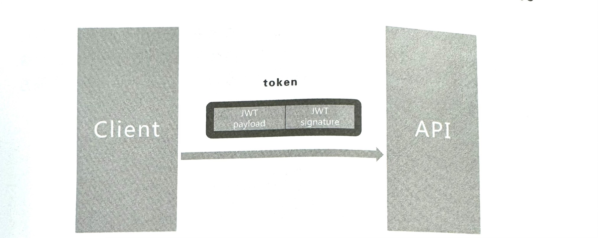
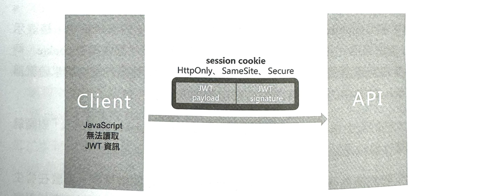
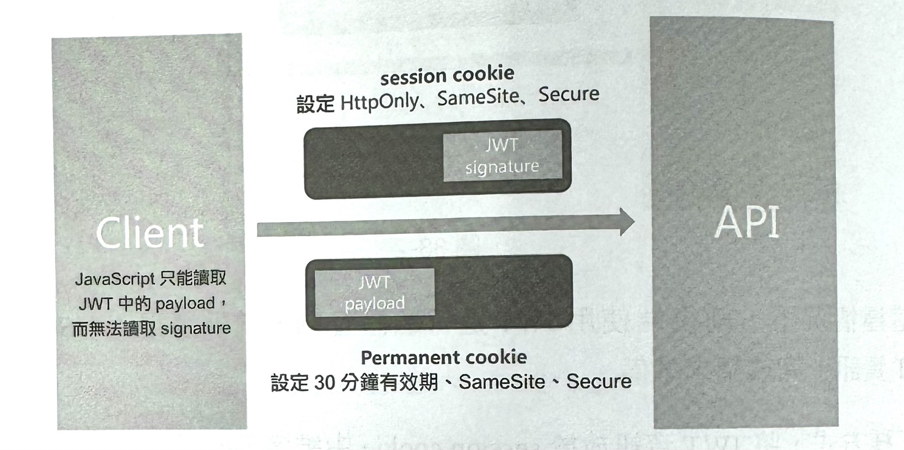
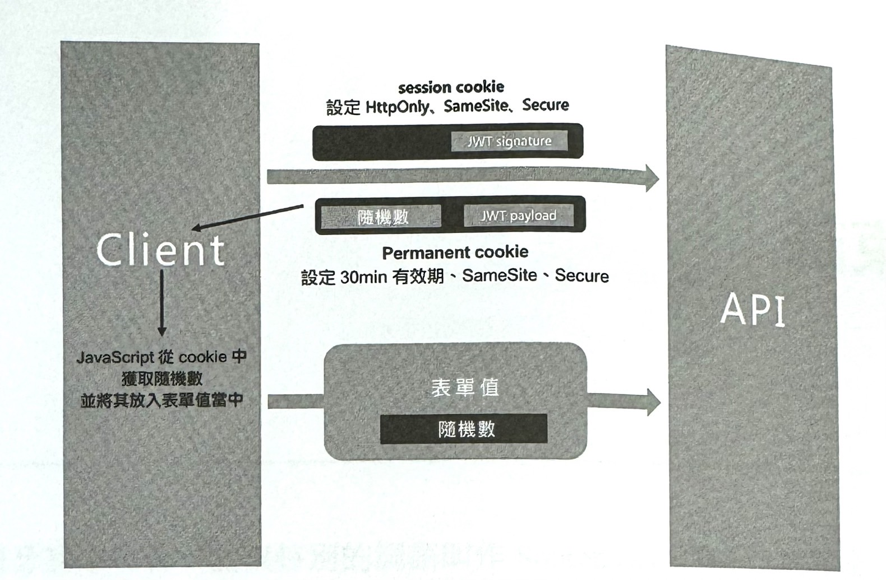

1-19-2 JWT 登入
採用JWT 實現驗證
在驗證過程中，為了驗證使用者的身份，需要瀏覽器向伺服器提供一個驗證資訊，稱之為 token。如果這個 token 通常由 JSON 資料格式組成，並會透過雜湊演算法產生一個字串，則將其稱為 JSON Web Token （JSON 表示權杖的原始類型為 JSON 格式，Web 表示在網際網路中進行傳播，Token 表示權杖，簡稱JWT）。任何 token 持有者都可以無差別地用它來存取相關資源。
可以在 HTTP Authorization header 中找到 token，其實就是一個字串值。 這個字串用來表示使用者的身份資訊，進行身份認證或從伺服器取得合法資源。當然，這個 token 常常是被加密的。那麼，這個 token 實際是如何產生的呢？
先從 JWT 說起，一個 JWT 包含以下3部分。- header（訊息表頭）
- payload（訊息體，儲存使用者 id、使用者角色等）+ 過期時間（可選）
- signature（簽名）
JWT 就是 JSON 格式的資料，JWT 的前兩部分就是 JSON 資料，第三部分 signature 是基於前兩部分 header 和 payload 產生的簽名。前兩部分分別透過 Base64URL 演算法產生兩組字串，再和 signature 結合，這3部分結合後透過.號分割，就是最後的 token。
正常來講，當用戶端提交使用者名稱/密碼（或其他方式）並透過認證後，就會獲得 JWT 的 token，接著透過 JavaScript 指令稿在所有資料請求的 HTTP header 中加上這個 JWT 的 token。伺服器端接到請求後，驗證 token 的 signature 是否等於 payload，進而得知 payload 欄位是否被中間人更改。 細心的人可能會發現，上面提到的「透過 JavaScript 指令稿在所有資料請求的 HTTP header 中加上 JWT 的token」涉及用戶端如何儲存和維護 JWT 的問題。
關於儲存 JWT，不建議開發者將 token 儲存在本機存放區（local storage）中，原因如下。
- 當使用者關掉瀏覽器後，JWT仍然會被儲存在本機存放區中，即使 JWT 過期，也可能一直被儲存（除非手動更新或清理）。
- 任何 JavaScript 都能輕而易舉地獲得本機存放區中的內容。
- 無法被 web worker 使用。
但在實際專案中，也在本機存放區中儲存過 JWT，這需要分清利弊，結合實際場景選擇方案。如果吃透概念，就能減少 bug 的出現，靈活制定實際的儲存方案。更好的選擇是將JWT 儲存在 session cookie 中。
JWT 隱憂
透過 JWT 實現驗證也存在隱憂，上面也簡要提到了，隱憂主要來自 XSS。攻擊者可以主動植入惡意指令稿或讓使用者輸入，透過 JavaScript 程式來偷取 token，然後透過 token 冒充受害使用者。
舉例來說，在一個部落格留言系統中，使用者可以在其留言內容中加入以下指令稿。
<img src=x onerror="javasc
ript:ale
rt('XSS'
)">
對此，一般的防禦方法是採用 HTML 逸出（為了防止 XSS 攻擊，常常需要將使用者輸入的特殊字元進行逸出）來過濾使用者輸入。
採用 Authentication cookie 實現驗證
cookie 是含有有效期和相關 domain 並儲存在瀏覽器中的鍵值對組合，可以由 JavaScript 程式建立：
document.cookie = 'my_cookie_name = my_cookie_value'
也可以在伺服器端透過設定回應標頭建立：
Set-Cookie: my_cookie_name = my_cookie_value
GET https://www.example.com/api/users
Cookie: my_cookie_name = my_cookie_value
cookie 一般分為以下兩種。
- session cookie，這種 cookie 會隨著使用者關閉瀏覽器而被清除，不會被標記任何過期時間 Expires 或最大時限 Max-Age。
- permanent cookie，與 session cookie 相反，會在使用者關閉瀏覽器之後被瀏覽器持久化儲存。
同時，伺服器端可以對 cookie 進行一些關鍵設定，以確保 cookie 的使用安全。
- HttpOnly cookie：在瀏覽器端，JavaScript 沒有讀取 cookie 的許可權。
- Secure cookie：只有在特定安全通道（通常指 HTTPS）下，傳輸鏈路的請求中才會自動加入相關 cookie。
- SameSite cookie：在跨域情況下，相關 cookie 無法被請求攜帶，這裡主要是為了防止 CSRF 攻擊。
一個經典場景就是使用 cookie 儲存一個 session ID （session ID 由伺服器端管理，進行建立和計時，以便在必要的時候清除）。透過驗證 cookie 和 sessionID，伺服器端便能標記一個使用者的存取資訊，這種情況就是我們說的有狀態的，而本節的主角 JWT 是無狀態的，因為它不需要伺服器端維護 sessionID，更加利於水平擴充。
Authentication cookie 隱憂
採用 Authentication cookie 實現單頁應用驗證的安全隱憂主要有以下兩種。
- XSS 如果沒有使用 httpOnly 選項，那麼攻擊者可能會選過植入惡授指令稿任意讀取使用者 cookie，而 cookie 中直接儲存了使用者的身份認證資訊，這當然是非常可怕的。
- CSRF 是常見的針對 cookie 展開進攻的方法。我們知道，跨域存取技術（如 CORS，即跨域資源分享）的相同來源政策能確保不同的來源的用戶端指令碼在沒有明確授權的情況下，無法讀寫對方資源。相同來源策略只是針對瀏覽器的程式設計指令碼語言，如果我們對一個惡意何服器發送 AJAX 請求，相同來源策略就會限制其發送，但是如果請求直接透過 HTML form 發送，那麼相同來源策略就毫無辦法了。另一個利用 CSRF 實施攻擊的場景為：假如受害者在網頁上登入了 Facebook，同時又開啟了 bad.com（攻擊者的網站），而這個網站中有下面這樣的程式。
// 現已失效
<img src="https://facebook.com/postComment?userId=100046167914185&comment=I_VE_BEEN_HACKED" >
如此一來，攻擊者網站的程式就會請求 Facebook 發送個人狀態的介面，該受害者的 Facebook 帳戶就會莫名其妙地在 Facebook 上發出一筆狀態，內容為 I_VE_BEEN_HACKED 。
總之，為了防禦 XSS 攻擊，開發者需要對 httpOnly 選項進行設定；為了防禦 CSRF，開發者需要對 SameSite 選項進行設定。但是需要注意，並不是所有瀏覽器都支援 SameSite。
混合使用 JWT 和 cookie 進行驗證
設想要實現這樣一個驗證系統：盡可能抵禦 XSS 和 CSRF，做到無狀態。
考慮到安全性能，JWT 方案的主要問題在於攻擊者存在直接讀取 JWT 資訊的可能。那如果我們將 JWT 和 cookie 方案結合呢？即將 JWT 部分的敏感資訊放入 cookie 中，這樣，便可以結合這兩種方案的優點。
下面歸納一下 JWT 存在的 3 種使用方式。第一種是經典 JWT 方式，如圖1
圖1
在這種情況下，前後端使用 JWT 進行驗證互動，前端透過 JavaScript 操作 JWT 資訊，完成請求準備。
第二種方式，將JWT 資訊放於 session cookie 中維護，如圖2所示
圖2
在這種情況下，JWT 資訊全部儲存在 cookie 中，在設定了cookie 的 HttpOnly、SameSite、 Secure 屬性後，前端便無法讀取 JWT 資訊，但每次請求中都會有瀏覽器附帶的必要的 JWT 資料（用來作為 cookie）。同時，由於採用了 session cookie，因此不存在 JWT 資訊過期的情況，使用者關閉頁面後，瀏覽器不會將 JWT 資訊持久化儲存，下次再開啟頁面時，會重新進行驗證。
第一種方式有一定的安全隱憂；第二種方式會將 JWT 所有的資訊儲存在 session cookie 中，優點明顯，但是無法做到持久化儲存，在某種程度上也會帶來不便。權衡了兩種方式的優缺點之後進行了變通，結合前面兩種方式獲得了第三種方式，如圖3所示。
圖3
這樣，JWT 的 signature 部分便維護在設定了 HttpOnly 的 cookie 中，這表示 JavaScript 無法讀取完整的 JWT 資訊。同時，每次請求中都會攜帶 cookie，伺服器端將其傳回給瀏覽器後瀏覽器會儲存，這樣 JWT 資訊在每次請求時就都可以被更新，JWT中的過期時間也會被自動加入其中。
為了實現大幅的安全保障，我們也可以考慮結合融合 cookie 的方式及「對關鍵操作重新進行驗證認證」的處理進行最佳化。
舉例來說，我們認為使用者更改電子郵件位址是一個關鍵操作，那麼在發生這個操作時，即讓使用者已經登入，系統還是會要求使用者重新填寫使用者密碼，以確認修改。後端在收到修改請求後，會產生一個隨機數（經過加密運算的），這個隨機數作為 permanent cookie 傳回給前端，JavaScript 需要讓取這個隨機數，並將這個隨機數作為表單值中的一項，隨新的電子郵件位址一起提交給伺服器端，伺服器端會對這個隨機表單值進行驗證，驗證方式是比較表單中的表單值和 cookie 中的隨機數，看它們是否一致。
這樣便大幅地防禦了 CSRF 攻擊，流程如圖4所示。
圖4
我們歸納一下整個驗證流程。
- 第一步：對於單頁應用中的每個頁面，需要檢查 cookie 中是否存在 JWT payload，如果存在，表示使用者已經成功進行驗證，否則重新導向到類似 /login 的登入頁面。
- 第二步：使用者在未授權的情況下，在登入頁面 /login 將使用者名稱和密碼提交給伺服器端，在伺服器端傳回的資訊中設定 Authentication cookie，使 cookie 中含有 JWT 資訊。
第二步可以採用上述第二種和第三種方式進行實際操作，也可以採用增強 CSRF 防禦等其他方法。